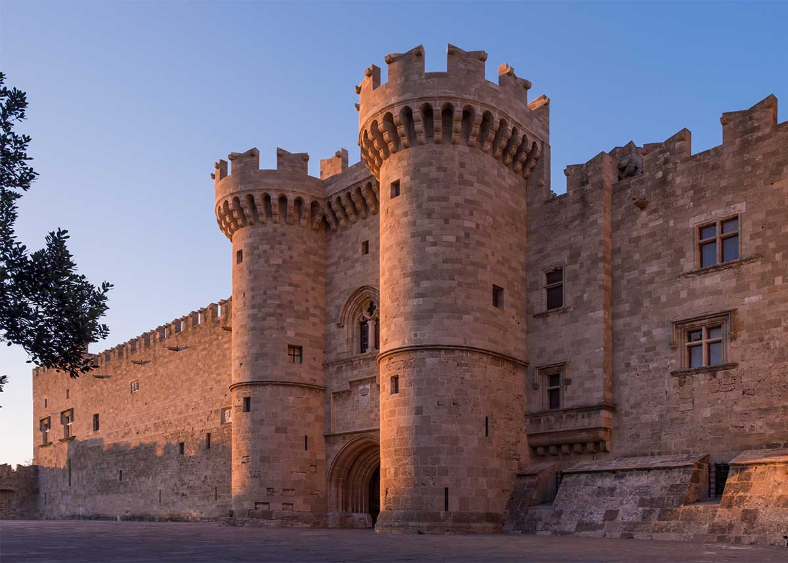

Παλάτι του Μεγάλου Μαγίστρου (Ρόδος)
Το Παλάτι του Μεγάλου Μαγίστρου των ιπποτών ή Καστέλο βρίσκεται στην βορειοδυτική πλευρά της μεσαιωνικής πόλης
της Ρόδου
στο ψηλότερο σημείο του κάστρου και αποτελεί το σημαντικότερο ίσως μνημείο της περιόδου των ιπποτών.
Κατασκευή απο τους Ιππότες:
Το Παλάτι του Μεγάλου Μαγίστρου είναι κτίσμα του 14ου αιώνα που κατασκευάστηκε από τους Ιωαννίτες ιππότες,
οι οποίοι κατείχαν
τη Ρόδο και ορισμένα άλλα νησιά όπως το Καστελόριζο από το 1309 έως το 1522, στη θέση παλαιότερης βυζαντινής ακρόπολης του 7ου μ.Χ. αιώνα.
Σύμφωνα με νεότερες έρευνες στη θέση του, βρισκόταν ο ιερός ναός του θεού Ήλιου και σε αυτή την θέση πιθανόν να είχε στηθεί
ο περίφημος Κολοσσός της Ρόδου
σε αντίθεση με την προγενέστερη πεποίθηση ότι βρισκόταν στην περιοχή Μανδράκι, που βρίσκεται στη θέση του ενός εκ των τριών λιμανιών της Ρόδου.
Το παλάτι εκτός από διοικητικό κέντρο των Ιπποτών και κατοικία του Μεγάλου Μαγίστρου ήταν επίσης έδρα της άρχουσας κοινωνικής και πνευματικής τάξης της Ρόδου.
Το κάστρο επί Οθωμανικής και Ιταλικής κατοχής:
Όταν κατέλαβαν το νησί οι Οθωμανοί χρησιμοποίησαν το παλάτι ως φρούριο, κέντρο διοίκησης και φυλακή ενώ το 1856, μετά από έκρηξη πυρομαχικών από χτύπημα κεραυνού, που φυλάσσονταν στα υπόγειά του παραπλήσιου ναού του Αγίου Ιωάννου των Ιπποτών, ένα μέρος του καταστράφηκε.Όταν το 1912 η Ρόδος περιήλθε στο Βασίλειο της Ιταλίας, οι Ιταλοί επιδιόρθωσαν το κομμάτι που είχε καταστραφεί, μεταξύ των ετών 1937 - 1940 υπό την εποπτεία του Ιταλού διοικητή της Δωδεκανήσου Ντε Βέκκι, καθιστώντας το έδρα του εκάστοτε Ιταλού διοικητή του νησιού αλλά και καλοκαιρινή κατοικία του βασιλιά Βίκτωρα Εμμανουήλ Γ΄της Ιταλίας,το όνομα του οποίου βρίσκεται ακόμη σε μια τεράστια πλάκα κοντά στην είσοδο.
Το κάστρο σήμερα:
Μετά την προσάρτηση των Δωδεκανήσων στην Ελλάδα το 1948 ο πρώτος όροφος του παλατιού μετατράπηκε από τις ελληνικές αρχές σε μουσείο, το οποίο περιέχει διάφορες καλλιτεχνικές δημιουργίες, είδη λαϊκής τέχνης από την αρχαιότητα και τον μεσαίωνα, όπλα, μεσαιωνικές ταφόπλακες, κοσμήματα, βιβλία, πίνακες ζωγραφικής, αγάλματα και άλλα ευρήματα ενώ γενικά το όλο κτίσμα αποτελεί τον μεγαλύτερο πόλο έλξης επισκεπτών στη μεσαιωνική πόλη της Ρόδου.
|  |